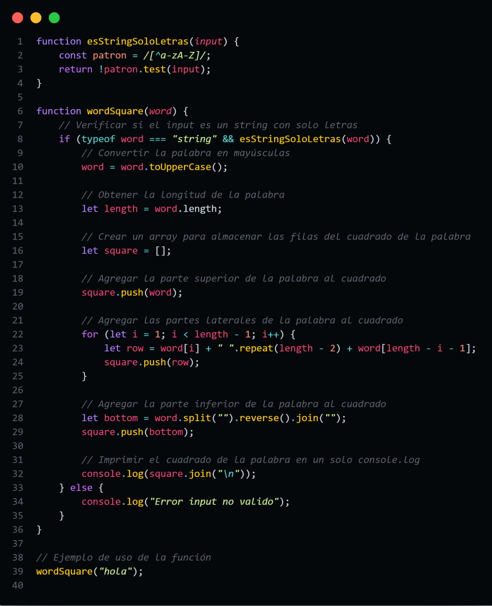

- En el siguiente código primeramente tenemos una función llamada "esStringSoloLetras" donde hacemos la verificación si el input dado es un string con solo letras.
- Luego tenemos la función principal wordSquare donde verificamos que sea un string y además que solo tenga letras usando la función anterior.
- Transformamos primeramente la palabra ingresada en letras mayúsculas, para posteriormente crear un array que almacenará las filas y las "columnas".
- Durante el recorrido del ciclo for obtenemos cada fila del array donde guardamos la letra que corresponde a la posición de i, los espacios correspondientes dejando dos para las letras y luego la última letra de tal manera que no terminen con la misma.
- En la parte final revertimos el orden de la palabra original dada, convirtiéndola a un array y con el método reverse y join le damos vuelta al array y lo convertimos luego a string, para luego imprimir todos los elementos guardados en el array.
